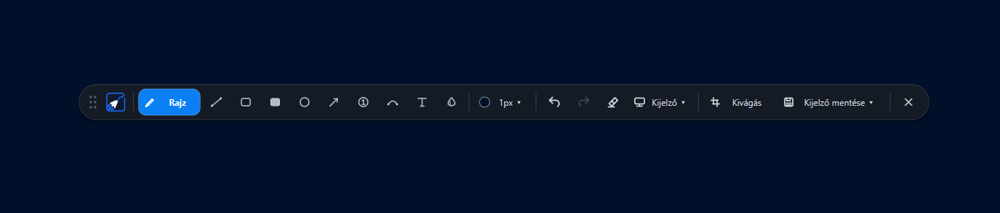
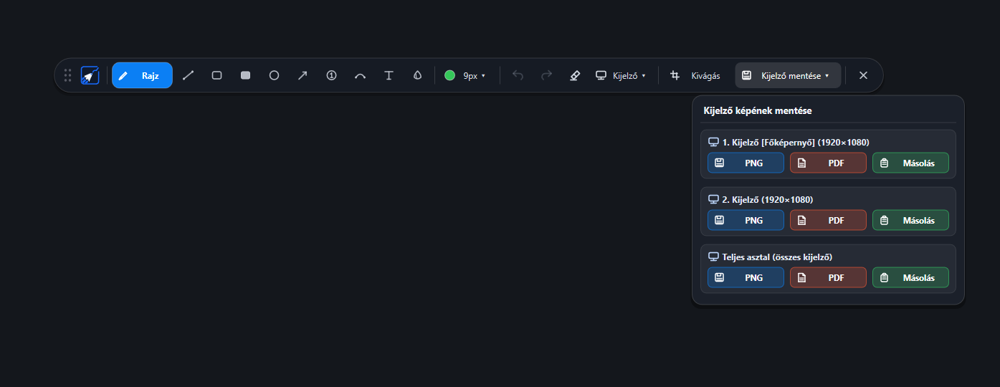
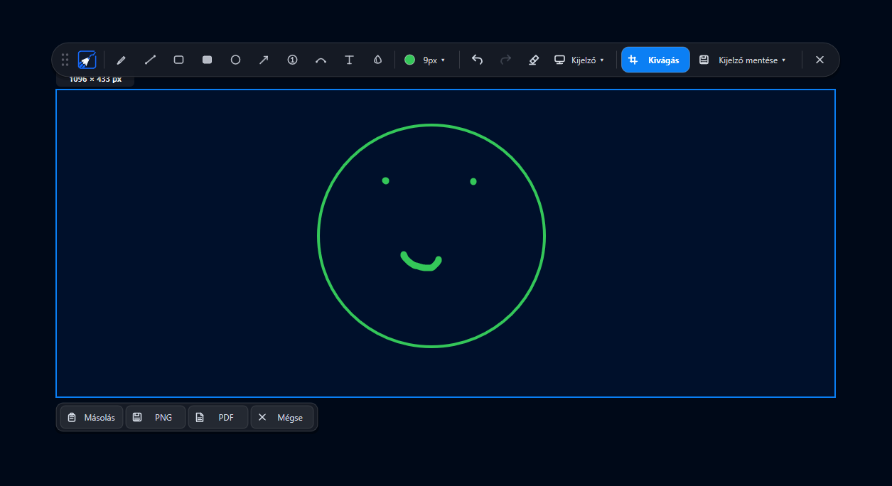
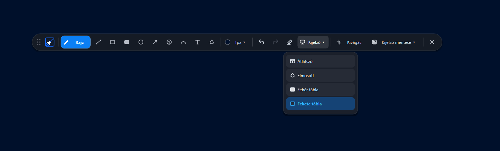
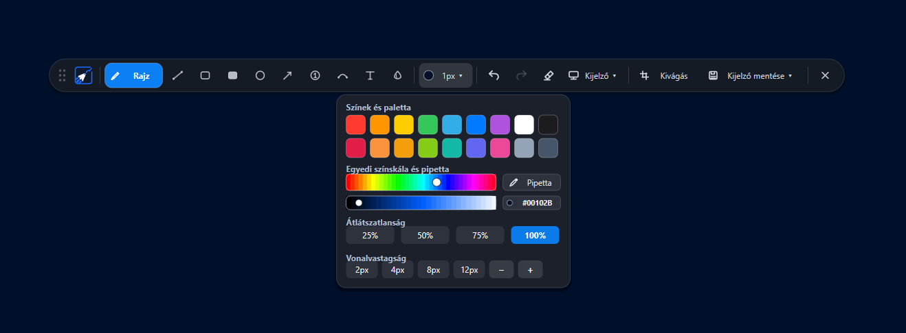

Rajzolás és jelölés
Szabadkézi rajz, vonalak, alakzatok, nyilak, számozás és szöveg egyetlen eszköztárból.
Rajzolj, emelj ki részleteket, készíts jelöléseket és mentsd el, amit látsz. A DrawIT egy letisztult, gyors képernyőrajzoló Windowsra – megújult felülettel és Rust-alapú motorral.

A DrawIT eszköztára segít gyorsan vizuálisan kommunikálni – akár bemutatót készítesz, hibát jelölsz, vagy csak kiemelnél valamit a képernyőn.
Szabadkézi rajz, vonalak, alakzatok, nyilak, számozás és szöveg egyetlen eszköztárból.
Válassz palettáról vagy egyedi színt, állítsd az átlátszóságot és a vonalvastagságot.
Átlátszó, elmosott, fehér vagy fekete háttér – válaszd a feladathoz illő megjelenést.
Jelölj ki egy területet, majd mentsd el vagy másold a vágólapra.
Válassz külön monitort vagy a teljes asztalt, és exportáld PNG- vagy PDF-formátumban.
A program új Rust-alapú motorra épül, amelyet a gyorsabb és hatékonyabb működés érdekében készítettél el.
A DrawIT felülete megújult, a program pedig Rust nyelvre lett átírva a jobb sebesség és hatékonyabb működés érdekében.
Az új DrawIT felületéről készült képernyőképek. Kattints bármelyik képre a teljes méretű megnyitáshoz.




A Windows figyelmeztethet, mert a DrawIT jelenleg nincs fizetős kódaláíró tanúsítvánnyal aláírva, ezért az ablakban az „Ismeretlen kiadó” felirat jelenhet meg. Ez önmagában nem bizonyítja, hogy a program kártékony. Csak a hivatalos letöltési helyről származó, ellenőrzött fájlt indítsd el.
Töltsd le a DrawIT-et, és jelöld, emeld ki vagy mentsd el a képernyőd fontos részeit.
↓ DrawIT letöltése